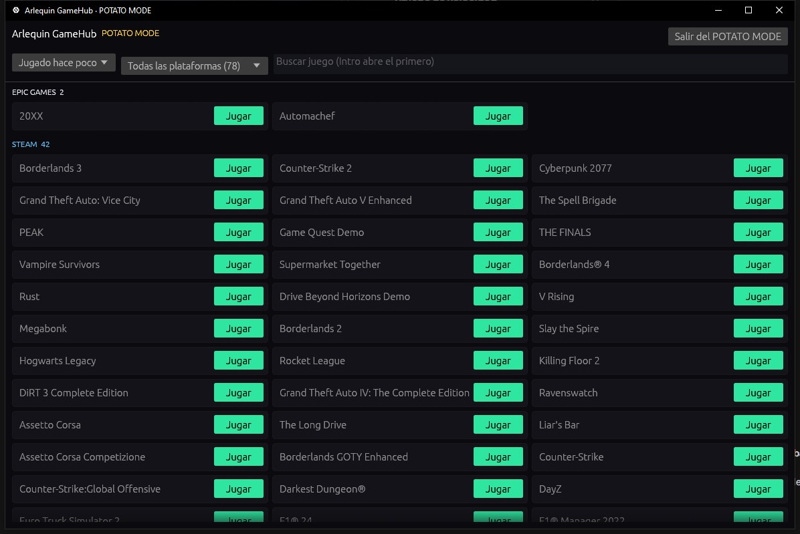

Всё, что умеет GameHub
Каждая функция с объяснением: что делает и как пользоваться. У сохранений своя страница — SaveHub, а то, что видно поверх игры, — в HUD и прицел.
Вся библиотека в одном месте
Steam, Epic, GOG, Xbox, Ubisoft, EA, Battle.net, Amazon, Rockstar и игры без лаунчера — вместе.
GameHub смотрит, что уже есть на вашем ПК: папки и файлы, которые хранит лаунчер каждого магазина. Так он находит установленные игры и те, что у вас есть, но не установлены, с обложками и сыгранными часами. Часы считаются, даже если вы запускаете игру из её лаунчера.
На боковой панели «Библиотека» открывает ваши магазины с числом игр в каждом (и те, чьё приложение установлено, даже если игр пока нет). Можно сортировать по названию, по последнему запуску, по часам или по размеру, мгновенно искать и смотреть, во что вы играли недавно.
Игры без лаунчера (эмулятор, игра с itch.io…) добавляются кнопкой «Добавить игру», или вы указываете GameHub папки с отдельными играми, и он находит их сам. Он ищет официальную обложку из Steam и для игр из других магазинов, добавленных вручную или снятых с продажи; если её нет, берёт значок игры, а вы всегда можете поставить свою картинку.
Игра, которая есть в нескольких магазинах или в одной папке, показывается один раз. А если Steam обновляет игру, это видно на её карточке («Обновление 45%» или «Ожидает обновления»).
Если затесалось что-то, что не игра (программа, сервер…), вы убираете это, и GameHub запоминает. Вернуть можно в Настройки → Библиотека.
Он никогда не спрашивает пароль от магазинов: для игры он запускает каждую игру через её лаунчер, как будто вы открыли её сами.
Игры Xbox / Microsoft Store и Ubisoft видны, даже если не установлены, а игры Game Pass можно скрыть. Серии сортируются по дате выхода, а обложки и фоны сохраняются на вашем ПК: они появляются мгновенно, даже без интернета.
Как пользоваться
- Откройте и подождите несколько секунд: игры появятся сами.
- Двойной клик или кнопка «Играть» (под обложкой), чтобы запустить игру.
- «Показать N не установленных» показывает и неустановленные.
- «Найти игры» сразу заново проверяет ваши магазины.
Страница каждой игры
Всё об игре на одной панели: как она идёт на вашем ПК, ваш FPS, ваши настройки и сохранения.
Клик по игре открывает её страницу с тремя вкладками: Обзор (ваши часы, когда вы играли последний раз, сколько места занимает, требования, ваш FPS и настройки графики), Сохранённые игры и Информация (ваши достижения, описание, магазин, студия, дата выхода, где установлена и куда сохраняет).
Пойдёт ли на моём ПК? GameHub знает ваш процессор, видеокарту и память и сравнивает их с минимальными и рекомендуемыми требованиями каждой игры в магазине Steam. Вы увидите светофор: зелёный — пойдёт с запасом, жёлтый — соответствует минимуму, красный — не дотягивает. В библиотеке можно оставить только игры, которые идут с запасом, которые идут или которые не идут.
А ещё сколько FPS вы получите, с диапазоном («≈ 75 FPS (65-85)») и на каждом качестве: Низкое, Среднее, Высокое и Ультра. Если вы уже играли, первыми идут ваши реальные FPS (только с текущими видеокартой и процессором); если нет — расчёт по сессиям сообщества (если вы делитесь своими или у вас ArlequinPro) или, приблизительно, по требованиям Steam.
Что вас ограничивает и что стоит улучшить? GameHub отдельно считает, что дала бы видеокарта и что потянет процессор, и говорит прямо: «Упор в видеокарту: процессор получше почти не поднимет FPS», или наоборот, или что они равны и улучшать придётся оба.
Также там сгруппированы его сохранённые игры (сохранения, настройки…), копии и кнопки, чтобы открыть папку или установить игру.
Как пользоваться
- Кликните по любой игре в библиотеке и переключайте вкладки сверху.
- Фильтр «На моём ПК» на панели вверху библиотеки.
Меняйте настройки графики каждой игры
Качество, разрешение, режим экрана, ограничение FPS, VSync… из GameHub, не открывая игру.
GameHub читает настройки графики, которые сохраняет каждая игра, и показывает их на её странице. В играх, которые хранят настройки в известном формате, их можно и менять: главные (общее качество, разрешение, режим экрана, ограничение FPS и VSync) под рукой, а «Все настройки» открывает окно со всеми, по группам и с поиском.
Он понимает игры на Unreal Engine (Borderlands 3 и 4, Hogwarts Legacy, THE FINALS…), Unreal Engine 3 (Rocket League, Killing Floor 2…), Unity и Source (Counter-Strike 2…), а также GTA V (Legacy и Enhanced), Cyberpunk 2077 и Far Cry со 2 по 6.
Перед первым изменением он сохраняет копию того, как всё было: «Восстановить исходные» вернёт всё обратно. При открытой игре он ничего не даст изменить (игра перезапишет это при выходе) и уважает файлы «только для чтения».
А ещё The Witcher 3 и Back 4 Blood, а в Cyberpunk 2077 можно выбрать, на каком экране играть.
Как пользоваться
- На странице игры — «Ваши настройки графики».
- Измените что хотите и нажмите «Сохранить»: заметите при следующем запуске игры.
Ваш настоящий FPS
Измеряет FPS во время игры, не трогая её, и говорит, что вас ограничивает.
С помощью PresentMon, бесплатного инструмента Intel с открытым кодом, GameHub снаружи следит, когда игра рисует каждый кадр: ничего не внедряет, поэтому не мешает античитам. Когда вы закрываете игру, он сохраняет сводку: средний FPS, медиану, 1% low (насколько плавно идёт) и подтормаживания.
Он записывает ваши настройки графики за эту сессию (качество, разрешение, DLSS/FSR, генерация кадров, трассировка лучей, VSync, ограничение FPS) и говорит, что ограничивает производительность: видеокарта, процессор или потолок FPS (если вас ограничивал VSync или лимит игры или драйвера, вы увидите «Ограничено», а не вину процессора). Плюс сколько ОЗУ, видеопамяти и виртуальной памяти использовала игра — на случай, если её не хватает.
Мы проверили, что он измеряет правильно: при анимации ровно в 360 FPS GameHub показал 358,8. А если хотите видеть их во время игры, выведите их в HUD.
Как пользоваться
- Включите на экране приветствия или в Настройки → Ваш ПК (это необязательно). Windows один раз спросит разрешение, а измерение начнётся после выхода из системы или перезагрузки.
- Поиграйте немного и закройте игру: результат появится на её странице в разделе «Ваш FPS».
Ваш ПК с первого взгляда
Ваши комплектующие, интернет и что ещё нужно включить, чтобы выжать максимум.
GameHub показывает процессор, видеокарту, память (частоту, задержки и модули), диски, экраны с их частотой обновления, клавиатуру и мышь, а также скорость интернета с тестом примерно на 25 секунд.
И предупреждает о том, что часто остаётся выключенным: если память работает медленнее, чем написано на коробке, потому что в BIOS выключен профиль XMP (EXPO на AMD DDR5), или если ваш ПК поддерживает Resizable BAR (Smart Access Memory на AMD), а он отключён. Оба дают бесплатные FPS во многих играх, и GameHub подскажет, как они называются в BIOS каждого производителя.
Ещё он показывает материнскую плату с версией и датой BIOS и производителя вашей видеокарты (Sapphire, ASUS, MSI…) и предупреждает, если Windows исправляет аппаратные ошибки (WHEA) или драйвер видеокарты зависает во время игры или теста: обычно это признак нестабильного разгона.
Как пользоваться
- Настройки → Ваш ПК.
- «Проверить скорость» для теста интернета (автоматический, раз в месяц, не запускается на мобильном интернете).
BenchHub: на что на самом деле способен ваш ПК
Тесты процессора, ОЗУ и видеокарты и Зал славы, чтобы сравнить себя с сообществом.
BenchHub глубоко тестирует процессор (каждое ядро, все ядра и задержку между ядрами), ОЗУ (скорость, задержку и её кривые) и видеокарту (одна и та же 3D-сцена для всех, в 1080p, 1440p и 4K, плюс PCIe и Resizable BAR) и говорит, если что-то их сдерживает: нагрев, лимит мощности, ОЗУ без XMP/EXPO или видеокарта в медленном слоте. Если вы разгоняете, отмечайте каждый тест: он сам записывает настройки BIOS, говорит, действительно ли изменение помогает или укладывается в погрешность, сравнивает до 4 тестов сразу и показывает, где улучшить по сравнению с теми, у кого такие же комплектующие.
Чистые тесты, которыми вы делитесь, появляются в Зале славы — с выбранным вами ником или как «Аноним».
Он определяет, разогнаны ли процессор, ОЗУ или видеокарта (со своей меткой и фильтром в Зале славы), говорит, какой ПК даёт 1000 очков (эталонный, стоковый), и даёт картинку с вашим результатом, чтобы поделиться.
Как пользоваться
- Инструменты → BenchHub.
- Сначала закройте игры и тяжёлые программы: GameHub отходит в сторону, пока измеряет.
- Чтобы попасть в Зал славы: Настройки → Конфиденциальность и данные → BenchHub.
AimHub: разминка для прицеливания В БЕТЕ
3D-комната, чтобы размяться перед игрой и проверить прицел, с вашей же чувствительностью.
AimHub — комната от первого лица с шестью режимами: Сетка (скорость), Флик (быстрые движения), Трекинг (вести движущуюся мишень), Микрокоррекция (точность), Реакция (в миллисекундах) и Разминка (несколько минут всего понемногу). Поворот как в вашей игре: выберите игру, её чувствительность и DPI мыши (больше 20 игр: CS2, VALORANT, THE FINALS, Apex, Overwatch 2, Fortnite, Marvel Rivals, Rust…), а там, где может, GameHub сам читает вашу текущую. Мышь работает без ускорения Windows, а комната — на частоте вашего экрана.
В разделе Проверить прицел вы видите свой прицел в натуральную величину на фоне неба, пустыни, снега, ночи или дыма, в разрешении вашей игры, и GameHub предупредит, если он где-то теряется. Ваши результаты и прогресс сохраняются на ПК, а лучший результат в каждом режиме может попасть в Зал славы AimHub с вашим ником и, если хотите, вашими настройками (чувствительность, DPI, поле зрения и прицел). Смотреть рейтинг бесплатно; копировать настройки другого игрока — часть ArlequinPro.
Также в бете: несколько режимов подряд, поле зрения каждой игры, HUD поверх во время тренировки, звук в «Слежении», когда прицел на мишени, и ник для Зала славы (тот же, что в BenchHub). Рейтинг можно посмотреть и здесь, в Зале славы.
Как пользоваться
- Инструменты → AimHub (в бете).
- Esc ставит на паузу.
- Чтобы попасть в Зал славы: Настройки → Конфиденциальность и данные → AimHub.
ReplayHub: сохрани то, что только что сыграл В БЕТЕ
Нажимаешь клавишу — и последние минуты игры сохраняются в видео, как в ShadowPlay.
ReplayHub в фоне записывает последние минуты игры и по Alt + F10 (клавишу можно поменять) сохраняет их в видео. Он захватывает экран снаружи игры, ничего в неё не внедряя (подходит для игр с античитом), и сжимает видео твоей видеокартой (AMD, NVIDIA или Intel), поэтому почти не нагружает процессор.
Ты выбираешь, сколько времени хранить, разрешение, 30 или 60 FPS, качество и формат: AV1, HEVC или H.264 (по умолчанию лучший, что есть у видеокарты), в MKV или MP4. Звук пишется по частям: игра, Discord, микрофон и остальной ПК. Если при сохранении что-то пойдёт не так, уже записанное можно посмотреть. Бесплатно: весь звук на одной дорожке и до 2 минут на клип; с ArlequinPro — отдельная дорожка на каждый источник и любая длительность.
Как пользоваться
- Инструменты → ReplayHub (в бете) и включи его.
- Alt + F10 сохраняет клип — во всех играх или только в выбранных.
- Клипы сохраняются в Видео\ReplayHub, по папке на каждую игру.
Play Hub: играть с дивана
Полноэкранный интерфейс для геймпада и телевизора.
По F11 или с боковой панели GameHub превращается в большой интерфейс для геймпада: огромные обложки, выбранная игра на фоне с её информацией и плавное перемещение по одной.
Сверху вкладки: «Все» и по одной на каждый магазин. Вкладки переключаются L1/R1 (LB/RB на Xbox), и в каждой свои ряды: Продолжить, Больше всего сыграно и вся библиотека. Вернувшись во вкладку, вы оказываетесь там же, где остановились, а закрыв игру, запущенную из Play Hub, возвращаетесь в Play Hub на ту же игру.
Он распознаёт геймпады Xbox, PlayStation и Switch и меняет показанные кнопки под тот, которым вы пользуетесь (или под выбранные вами). Работает и с клавиатурой (стрелки, WASD, Q/E) и колесом мыши. Игры без обложки получают свою, с названием и цветами.
Он показывает заряд ноутбука или Steam Deck, геймпадов и гарнитуры, подстраивается под маленькие экраны вроде Steam Deck, а во время игры геймпад больше не управляет им в фоне.
Как пользоваться
- F11 или «Play Hub» на боковой панели.
- В Настройки → Геймпад и Play Hub выбирается стиль кнопок.
Встроенный чат
Discord, Steam Chat и TeamSpeak рядом с играми.
Открывает чат каждого сервиса внутри GameHub, на панели, ширину которой можно менять, или в отдельном окне. Каждый сервис включается и выключается отдельно, со своим звуком, а в TeamSpeak видно, кто говорит на вашем канале.
Кроме того, пока открыта игра, ваш статус в Discord показывает, во что вы играете («Играет в CS2 в Arlequin GameHub») и сколько (можно отключить в Настройки → Во время игры).
Во время игры чат может оставаться на связи, даже когда GameHub закрывает своё окно, чтобы отдать всё игре: это выбирается в Настройки → Во время игры.
Как пользоваться
- Нажмите «Чат» на боковой панели и выберите сервис.
- Настройки → Чат, чтобы выбрать сервисы и звуки.
Коробка удачи
Не знаете, во что поиграть? Пусть решит удача.
Рулетка в стиле игровых лутбоксов, которая выбирает одну из ваших игр. Можно выбрать установленные или нет, из какого магазина и по часам или по достижениям: чаще всего выпадают игры, которые вы ни разу не открывали, а реже всего — те, в которые вы играли больше всего.
В день даётся 5 вращений (без ограничений с ArlequinPro).
Режим «Забытые» выбирает игры, которые вы давно не открывали; «Только не эту» убирает игру из коробки, недавние призы не повторяются, а история сохраняется. А если примете вызов (сыграете в выпавшую игру 30 минут), получите дополнительное вращение, до 3 в день. Можно выбрать только свои игры или ещё и игры вашей семьи Steam.
Как пользоваться
- На боковой панели — «Коробка удачи».
POTATO MODE
Для слабых ПК: GameHub в сверхлёгком нативном окне.
POTATO MODE перезапускает GameHub без веб-интерфейса (без встроенного браузера): только ваши игры и кнопка «Играть». Он тратит гораздо меньше памяти и продолжает копировать сохранения и считать часы.
POTATO MODE+ (ArlequinPro) идёт ещё дальше: только лаунчер, ничего в фоне, весь ПК — для игры.
Окно POTATO MODE рисуется процессором, без видеокарты: около 10 МБ памяти и ноль видеопамяти. А обычный интерфейс тоже тратит гораздо меньше памяти и видеокарты, чем раньше, особенно при большом числе игр или со свёрнутым GameHub.
Как пользоваться
- Кнопка «POTATO MODE» на боковой панели (и «+» для POTATO MODE+).
- В Настройки → Производительность можно сделать так, чтобы он всегда запускался в этом режиме, и выбрать в каком.
- Когда вы запускаете игру, GameHub сам переходит в POTATO MODE (закрывает окно и чат, чтобы отдать всё игре) и возвращается как был, когда вы её закрываете. В Настройки → Во время игры выбирается, закрывать ли окно и отключать ли чат (например, чтобы остаться в звонке Discord).

Под себя
Темы, язык и поведение GameHub.
Выберите тему (Arlequin, Полночь, Тёмная с чисто чёрным фоном или Светлая с белым; с ArlequinPro — ещё Закат и Неон) на английском, испанском или упрощённом китайском. Для ПК с малыми ресурсами есть лёгкий режим без анимаций, прозрачности и свечения (его можно включить уже на экране приветствия).
В бете GameHub есть также на русском, португальском (Бразилия), немецком, французском и итальянском.
GameHub может запускаться вместе с Windows, скрываясь в трее (чтобы считать часы и копировать сохранения, даже если вы играете через другой лаунчер). Он обновляется сам (если вы пропустили версии, покажет все новинки вместе), а в первый раз покажет ваши игры по магазинам, чтобы вы убрали то, что не игра.
В Настройки → Конфиденциальность и данные можно отправить создателю Arlequin идею или сообщить о проблеме (с почтой или Discord, если хотите ответ), а вверху окна появляются объявления Arlequin, когда есть что-то важное.
Как пользоваться
- Настройки: на каждой странице вверху объяснено, что на ней настраивается.
Попробуете?
⬇ Скачать напрямую 🛍️ Скачать в Microsoft StoreWindows 10 и 11 (64 бита) · Бесплатно · Обновляется сам